Electrical work
CAP Électricien. Sixteen English words of the trade: tools, objects and everyday gestures. Open to everyone.
Four steps: from French to English, listen and choose, match, and complete a sentence at work. The Listen button reads the word in British English.
Word list
| Image | Français | English | Audio |
|---|---|---|---|
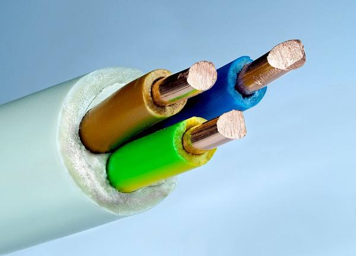 | le câble | cable | |
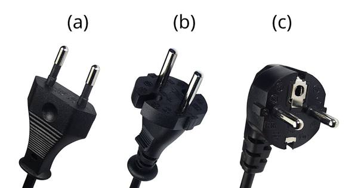 | la fiche | plug | |
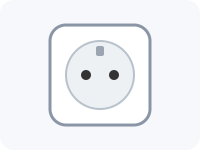 | la prise de courant | socket | |
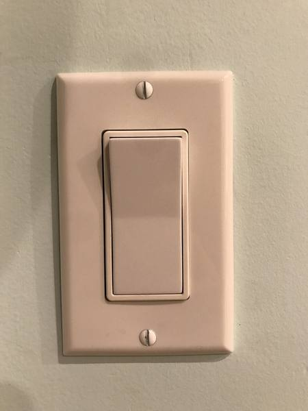 | l'interrupteur | switch | |
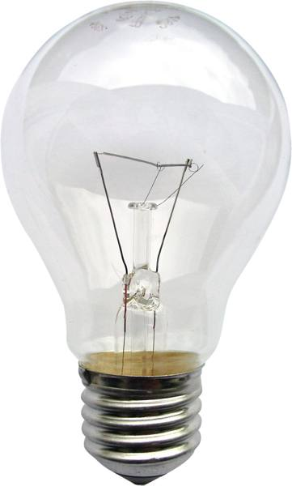 | l'ampoule | light bulb | |
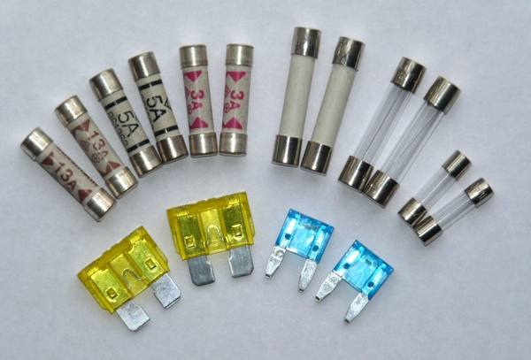 | le fusible | fuse | |
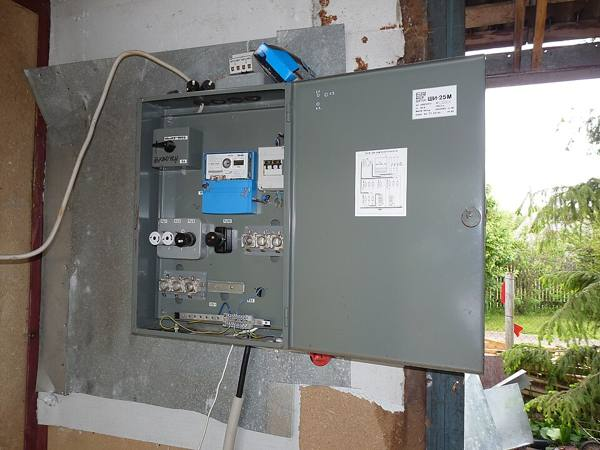 | le tableau électrique | consumer unit | |
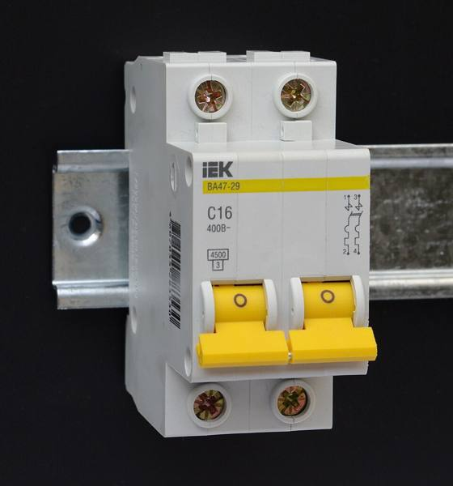 | le disjoncteur | circuit breaker | |
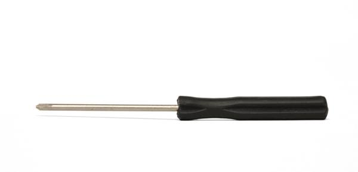 | le tournevis | screwdriver | |
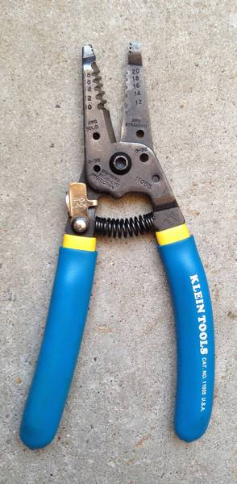 | la pince à dénuder | wire strippers | |
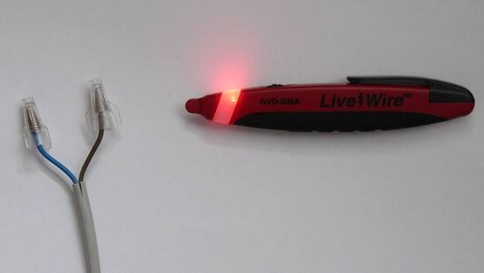 | le testeur de tension | voltage tester | |
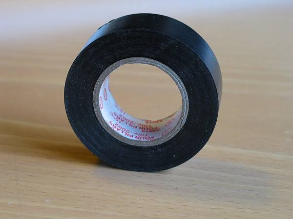 | le ruban isolant | insulating tape | |
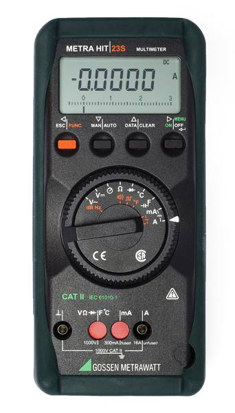 | le multimètre | multimeter | |
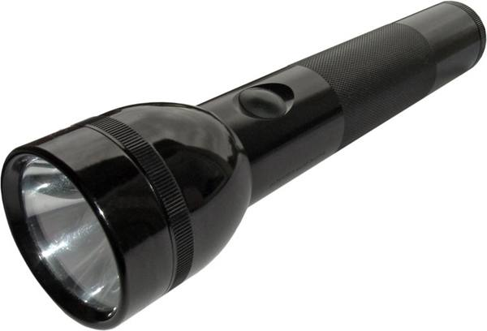 | la lampe torche | torch | |
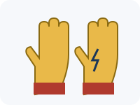 | les gants isolants | insulated gloves | |
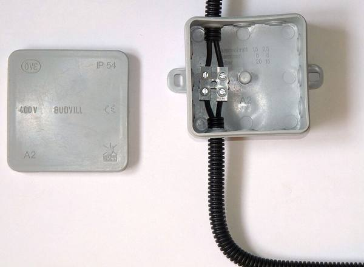 | la boîte de dérivation | junction box |
Teacher key: sentences at work
- Turn off the power at the ________. (consumer unit)
- Check there is no power with the ________. (voltage tester)
- Strip the wire with the ________. (wire strippers)
- Change the ________: the light does not work. (light bulb)
- Put the plug in the ________. (socket)
- It is dark: I need a ________. (torch)
In steps 1, 2 and 3, the right answer is the line in the word list.
Image credits
Photos under an open licence, from Wikimedia Commons, resized for the phone. Original drawings for gestures and ideas.
- le câble (cable) : photo by Petar Milošević, licence CC BY-SA 4.0, file page on Wikimedia Commons.
- la fiche (plug) : photo by MikeRun, after a photo by SomnusDe, licence CC BY-SA 3.0, file page on Wikimedia Commons.
- la prise de courant (socket) : original drawing, Grand Tour, CC BY-NC-SA 4.0.
- l'interrupteur (switch) : photo by DemonDays64, licence CC BY-SA 4.0, file page on Wikimedia Commons.
- l'ampoule (light bulb) : photo by KMJ, licence CC BY-SA 3.0, file page on Wikimedia Commons.
- le fusible (fuse) : photo by Pfnicholls, licence CC BY-SA 4.0, file page on Wikimedia Commons.
- le tableau électrique (consumer unit) : photo by Dmitry G, licence CC BY-SA 3.0, file page on Wikimedia Commons.
- le disjoncteur (circuit breaker) : photo by Kae, licence CC BY-SA 3.0, file page on Wikimedia Commons.
- le tournevis (screwdriver) : photo by 多多123, licence CC BY 4.0, file page on Wikimedia Commons.
- la pince à dénuder (wire strippers) : photo by J.C. Fields, licence CC BY-SA 3.0, file page on Wikimedia Commons.
- le testeur de tension (voltage tester) : photo by Dmitry G, licence CC BY-SA 3.0, file page on Wikimedia Commons.
- le ruban isolant (insulating tape) : photo by Jonas Bergsten, licence Public domain, file page on Wikimedia Commons.
- le multimètre (multimeter) : photo by Harke, licence CC BY-SA 3.0, file page on Wikimedia Commons.
- la lampe torche (torch) : photo by KMJ at German Wikipedia, licence CC BY-SA 3.0, file page on Wikimedia Commons.
- les gants isolants (insulated gloves) : original drawing, Grand Tour, CC BY-NC-SA 4.0.
- la boîte de dérivation (junction box) : photo by Dmitry G, licence CC BY-SA 3.0, file page on Wikimedia Commons.
Vocabulary sheet to print
Large type (16 point minimum), in three formats: